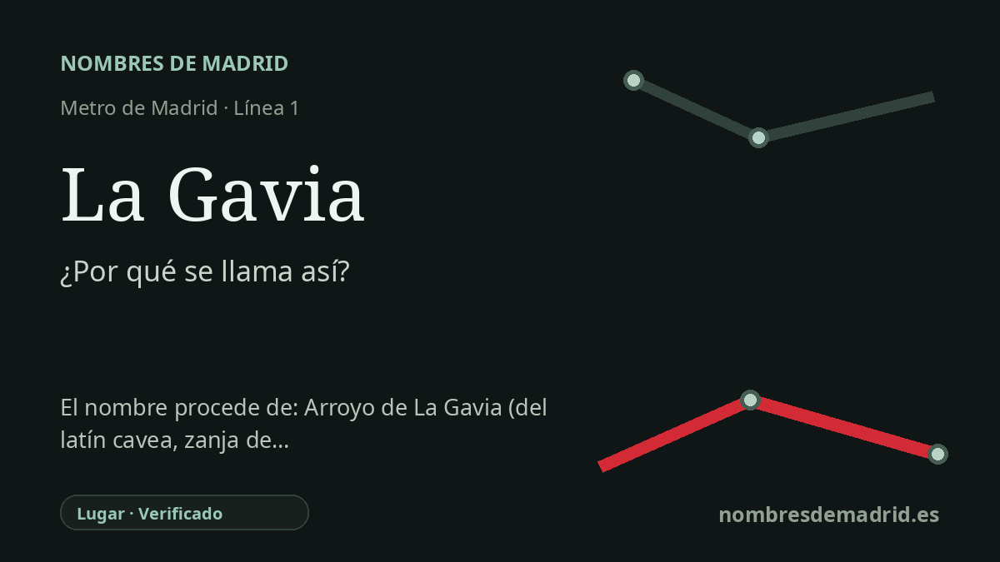

Publicado el · Investigación de Nombres de Madrid · Cómo verificamos cada origen · 7 fuentes consultadas
Respuesta rápida
La Gavia toma su nombre de la cercana avenida de la Gavia y, en último término, del arroyo de La Gavia, un pequeño valle tributario del Manzanares en Vallecas. La palabra gavia significa zanja o foso de desagüe y procede del latín cavea, 'cavidad' o 'jaula'.
La historia del nombre
La estación de La Gavia forma parte de la prolongación de la línea 1 por el Ensanche de Vallecas. Su entorno urbano inmediato está en la avenida del Ensanche de Vallecas, junto a la avenida de la Gavia, por lo que el nombre de la estación debe entenderse como un nombre moderno de transporte tomado de una vía y de un paisaje local.
Detrás de esa avenida está el arroyo de La Gavia. El catálogo arqueológico publicado sobre el Cerro de La Gavia explica que varios topónimos del sureste del municipio de Madrid llamados “La Gavia” toman su nombre de este pequeño cauce, afluente corto del Manzanares por su margen izquierda. El arroyo forma un vallecillo con dirección nordeste-suroeste, y la elevación más alta junto a su confluencia con el Manzanares recibió el nombre de Cerro de La Gavia.
La palabra es descriptiva. La RAE registra gavia como voz procedente del latín cavea, con el sentido de zanja abierta en la tierra para desagüe o para deslindar propiedades. Ese significado encaja con un cauce menor y con una hendidura o depresión del terreno, aunque el origen léxico general está mejor documentado que la imposición medieval o moderna del nombre a este arroyo concreto.
La Gavia es también uno de los nombres que une el nuevo Ensanche con un Vallecas mucho más antiguo. Los trabajos arqueológicos en el valle del arroyo identificaron materiales paleolíticos relacionados con la abundancia de sílex y con el uso reiterado del entorno del bajo Manzanares. En el Cerro de La Gavia, las excavaciones documentaron un poblado de la Segunda Edad del Hierro, ocupado desde el siglo IV a. C. hasta los comienzos de época romana, levantado sobre escarpes de yesos sobre el paisaje fluvial.
No consta un nombre anterior para la estación de Metro; abrió ya con este nombre en 2007. Para el lugar, sin embargo, el Cerro de La Gavia estuvo tradicionalmente asociado también a la “Cueva de la Magdalena”, una cavidad en la ladera oriental. La interpretación mejor respaldada es por tanto: estación por la avenida de la Gavia, avenida y toponimia del entorno por el arroyo de La Gavia, y gavia como antigua palabra española para una zanja o foso de desagüe.